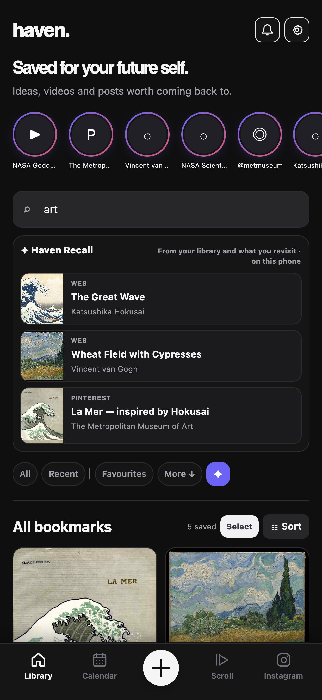
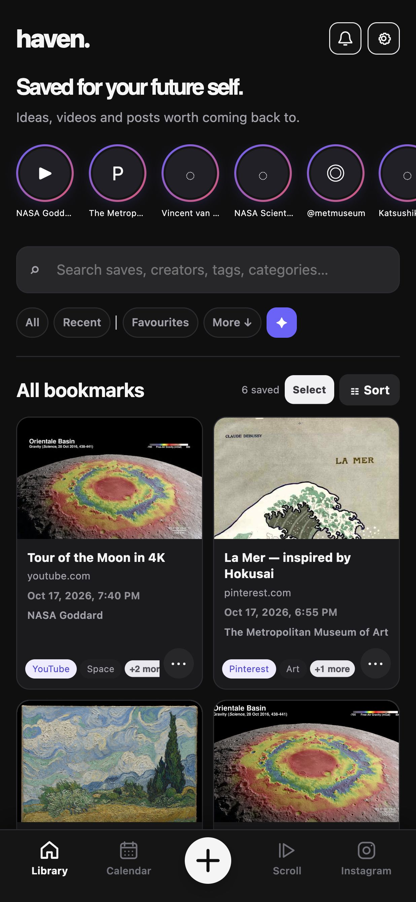
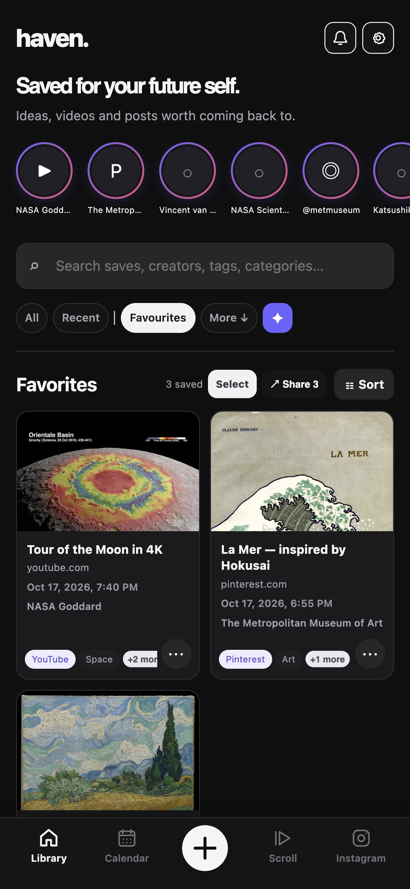
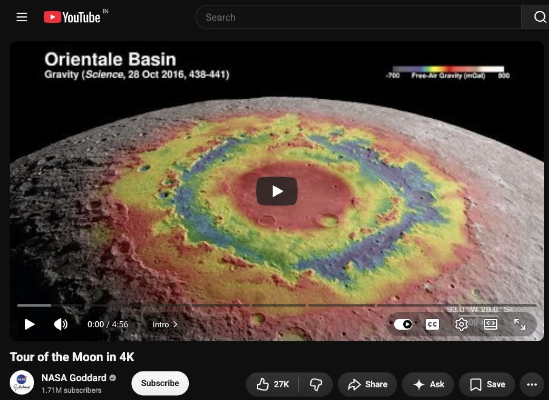
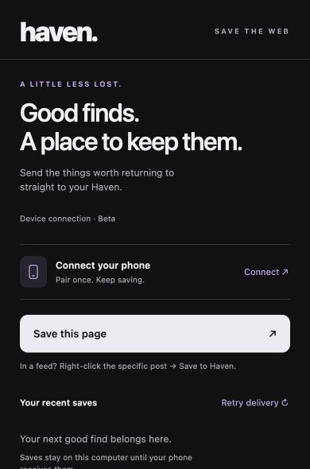
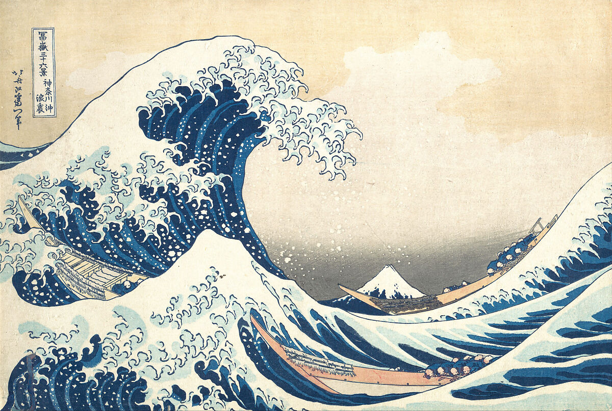

Pair once.
On the same trusted Wi-Fi, use Haven’s Connected devices settings to scan the extension’s pairing QR.
A LITTLE LESS LOST.
The video for later. The art that stays with you. The page you don’t want to lose.
Bring them home to Haven.
Haven for Android
Haven for Chrome



THIS IS HAVEN. ON ANDROID.
Not scattered across apps. Not buried in a chat with yourself.
A visual library of the things you chose to keep.
Haven · Dark appearance
A LOOK INSIDE, NOT A MOCK-UP
Library · actual app layout, sample collection. Tap the phone to inspect it.
THE BROWSER COMPANION
Haven lives on Android. The extension is the bridge from your computer—not a desktop version of your library.

NASA Goddard’s “Tour of the Moon in 4K”. The same verified video link appears in the sample Haven library.

Actual popup · unpaired state
On the same trusted Wi-Fi, use Haven’s Connected devices settings to scan the extension’s pairing QR.
Use “Save this page”. For a specific post in a feed, right-click its link and choose “Save to Haven”.
The link joins your Haven library. If the phone is away, the extension keeps a queue for delivery later.
Illustrated workflow, not a live connection. Source pages are real cropped captures; Haven screens use an isolated sample library. Preview availability depends on the original platform.

KATSUSHIKA HOKUSAI · THE GREAT WAVE · CA. 1830–32
LESS COLLECTING. MORE RETURNING.
You don’t need to turn every good find into a project. Sometimes you just need to know where it is.
Keep the link. Remember the image. Come back when you have the time.
Explore the actual app screens ↑Your saved library lives locally in Haven. Back it up from the app when you want a copy.
Haven keeps links and available previews. Original posts, videos and pages still belong to their sources.
A place for what you deliberately save—not a promise to read, watch or finish everything.
A FEW THINGS, BEFORE YOU ASK
No. Haven’s library is currently an Android app. The Chrome extension sends links from your computer to Haven on your phone. This website is a product introduction, not a web version of Haven.
Yes—the interface is rendered from the Android 1.0.166 source that matches the release bundle. The saves are a separate sample collection of real public links. These are source-rendered captures, not physical-device screenshots or a live transfer recording.
No. Saving a link does not promise an offline copy of the original content. Covers, embeds and original pages depend on the source’s availability and access requirements.
Pair the extension with Haven on Android over the same trusted Wi-Fi. Link sharing is encrypted. Saves can stay queued on your computer while your phone is unavailable.
Haven is an Android app with a Chrome browser companion. Your library lives on your phone; the extension sends the things you find on your computer to it over your trusted Wi-Fi.
A HOME FOR YOUR GOOD FINDS
For your phone. With a little help from your browser.
Your phone. Your browser. One Haven.